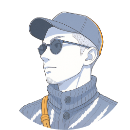
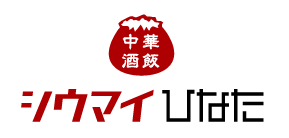
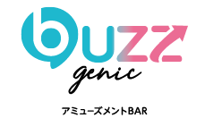
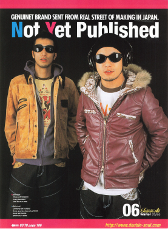

伝える つなげる 動かすデザイン
seikanyonemata Portfolio
portfolio
Works
Video works
Graphic works
Corporate Projects
企業案件
広告代理店を通じて携わった案件につきましては、クライアントとの守秘義務契約により、当サイト上での一般公開は控えております。
内容の閲覧をご希望の方には、守秘義務をお守りいただける場合に限り、パスワード付きのDropboxにて限定公開しております。
ご希望の方は、下記ボタンよりパスワードをご入力のうえ、ご覧ください。
DropboxIdentity Design
Profile
SEIKAN
YONEMATA




福岡県北九州のストリート系セレクトショップで、プライベートブランドの企画・デザインを担当。ジャケットから小物までをフルオリジナルで展開し、生地にグラフィックを施すなど独自性のあるアイテムが注目を集めた。
大学でデザイン学部グラフィック専攻。デザインの魅力に惹かれつつ、アパレルへの関心も強く、卒業後はファッション・音楽・デザインを融合したファッションビジネスの道へ進む。
印刷・WEB・広告など多様な業界で経験を積み、制作ディレクションやアートディレクションまで幅広く担当。ときには自ら手を動かし、アイデアをカタチにする喜びと、クライアントの想いをデザインで叶えるやりがいを実感。
アートディレクションとグラフィックデザインを軸に独立。
大手食品メーカー、百貨店、通販会社から、ダンススクールや飲食店まで、想いに寄り添うデザインを幅広く手がける。
Contact
Get in touch.
お仕事のご依頼・ご相談は、下記のメールアドレスよりご連絡ください。ご希望の内容を詳しくお伺いしたうえで、お見積もりをご案内いたします。内容や時期によっては、ご返信にお時間をいただく場合がございます。あらかじめご了承ください。

E-mail